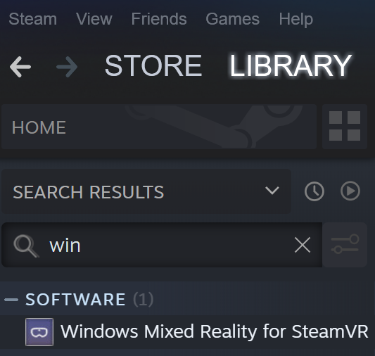
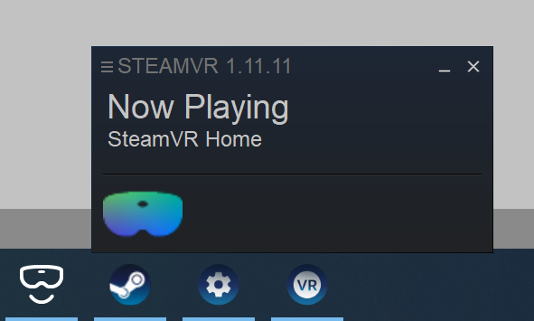

Building and deploying MRTK
To run an app on device as a standalone app (for HoloLens, Android, iOS, etc.), the build and deploy step needs to be executed in the unity project. Building and deploying an app that uses MRTK is just like building and deploying any other Unity app. There are no MRTK-specific instructions. Read below for detailed steps on how to build and deploy a Unity app for HoloLens. Learn more about building for other platforms at Publishing Builds.
Building and deploying MRTK to HoloLens 1 and HoloLens 2 (UWP)
Instructions on how to build and deploy for HoloLens 1 and HoloLens 2 (UWP) can be found at building your application to device.
Tip: When building for WMR, HoloLens 1, or HoloLens 2, it is recommended that the build settings "Target SDK Version" and "Minimum Platform Version" look like they do in the picture below:

The other settings can be different (for example, Build Configuration/Architecture/Build Type and others can always be changed inside the Visual Studio solution).
Make sure that the "Target SDK Version" dropdown includes the option "10.0.18362.0" - if this is missing, the latest Windows SDK needs to be installed.
Unity 2019.3 and HoloLens
If a HoloLens app appears as a 2D panel on device, make sure the following settings have been configured in Unity 2019.3.x before deploying your UWP app:
If using the legacy XR:
- Navigate to Edit > Project Settings, Player
- Under XR Settings in the UWP tab, make sure Virtual Reality Supported is enabled and the Windows Mixed Reality SDK has been added to SDKs.
- Build and deploy in Visual Studio
If using the XR-Plugin:
- Follow the steps found in Getting Started with XRSDK
- Make sure the configuration profile is the DefaultXRSDKConfigurationProfile
- Navigate to Edit > Project Settings, XR-Plugin Management and make sure Windows Mixed Reality is enabled.
- Build and deploy in Visual Studio
Important
If using Unity 2019.3.x, select ARM64 and not ARM as the build architecture in Visual Studio. With the default Unity settings in Unity 2019.3.x, a Unity app will not deploy to a HoloLens if ARM is selected due to a Unity bug. This can be tracked on Unity's issue tracker.
If the ARM architecture is required, navigate to Edit > Project Settings, Player, and under the Other Settings menu disable Graphics Jobs. Disabling Graphics Jobs will allow the app to deploy using the ARM build architecture for Unity 2019.3.x, but ARM64 is recommended.
Building and deploying MRTK to a Windows Mixed Reality Headset
The Windows Mixed Reality (WMR) headset can be used for Universal Windows Platform (UWP) and Standalone builds. A Standalone build for a WMR headset requires the following extra steps:
Note
Unity's XR SDK also supports native WMR in Standalone builds, but does not require SteamVR or WMR plugin. These steps are required for Unity's legacy XR.
- Install Steam
- Install SteamVR
- Install the WMR Plugin
How to use WMR plugin
Open Steam and search for the Windows Mixed Reality Plugin
- Make sure SteamVR is closed before launching the WMR Plugin. Launching the WMR plugin also launches SteamVR.
- Make sure the WMR headset is plugged in.

Select Launch for the Windows Mixed Reality for SteamVR Plugin.

SteamVR and the WMR plugin will launch and a new tracking status window for the WMR headset will appear.
For more information visit the Windows Mixed Reality Steam Documentation

In Unity, with your MRTK scene open, navigate to File > Build Settings
Build the scene
- Select Add Open Scene
- Make sure the Platform is Standalone
- Select Build
- Choose the location for the new build in File Explorer

A new Unity executable will be created, to launch your app select the Unity executable in File Explorer.